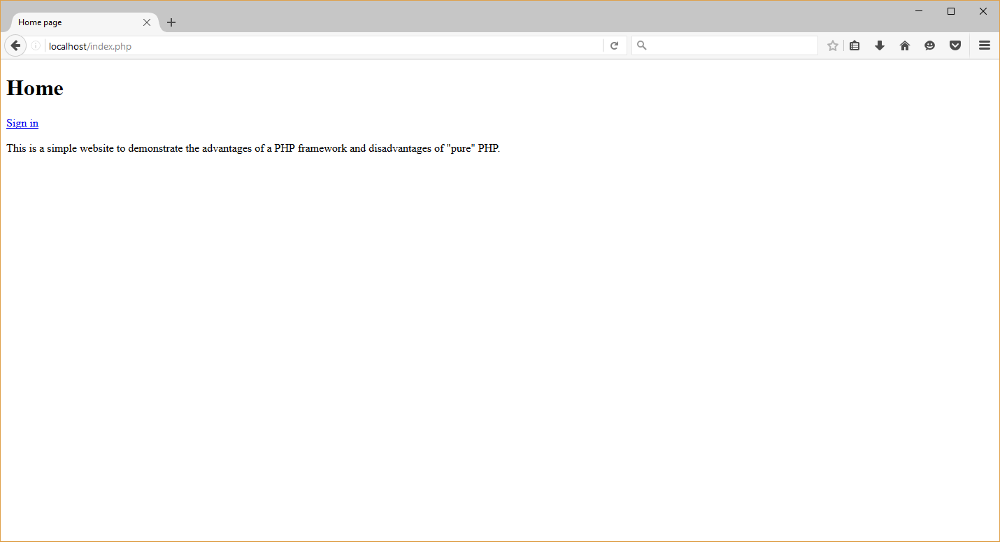
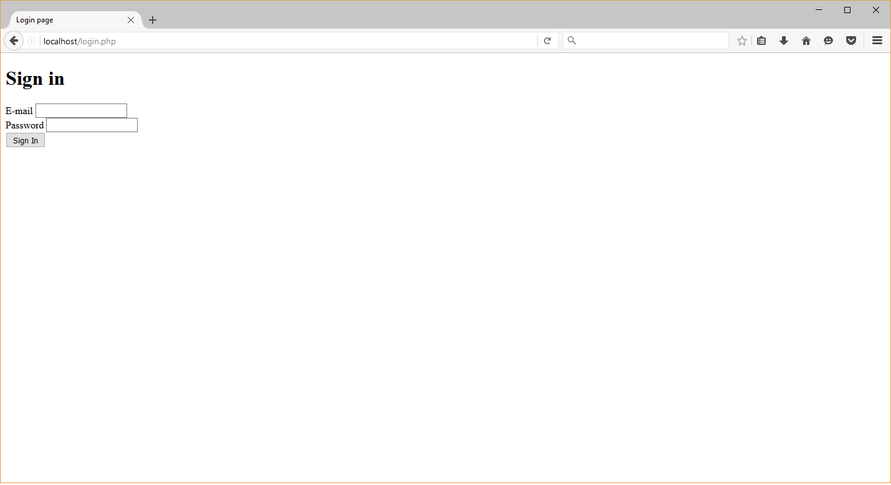
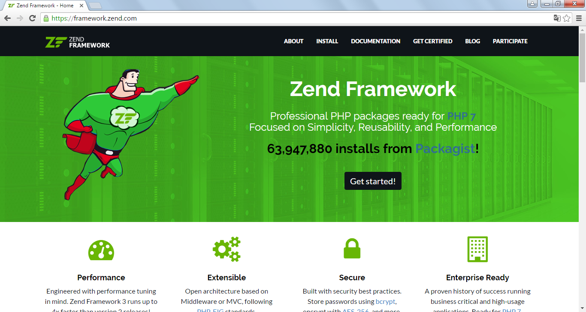

Introduction to Laminas Framework
In this chapter you will learn about Laminas Framework, its main principles and components.
What is Laminas Framework?
PHP is a popular website development language. However, writing websites in pure PHP is difficult. If you write a web application in pure PHP, you'll have to organize your code in some way, collect and validate user input, implement support of user authentication and access control, manage database, test your code and so on. As your site grows in size, it becomes more and more difficult to develop the code in consistent manner. Each developer in your team applies his/her favourite custom coding styles and patterns. The code becomes overcomplicated, slow and difficult to support. You merge all your code in a single giant script with no separation of concerns. You have to reinvent the wheel many times and that causes security problems. Moreover, when you switch to the development of a new site you will notice that a large portion of the code you have already written for the old website can be used again with small modifications. This code can be separated in a library. This is how frameworks appeared.
What is a Framework?
A framework is some kind of a library, a piece of software (also written in PHP) providing web developers with code base and consistent standardized ways of creating web applications.
Laminas Framework is a free and open-source PHP framework. Its development is guided (and sponsored) by Laminas Technologies, who is also known as the vendor of the PHP language. The first version (Laminas Framework 1) was released in 2007; Laminas Framework 2, the second version of this software, was released in September 2012. Laminas Framework (or shortly Laminas) was released in June 2016.
Laminas Framework provides you with the following capabilities:
-
Develop your website much faster than when you write it in pure PHP. Laminas provides many components that can be used as a code base for creating your website.
-
Easier cooperation with other members of your site building team. Model-View-Controller pattern used by Laminas allows to separate business logic and presentation layer of your website, making its structure consistent and maintainable.
-
Scale your website with the concept of modules. Laminas uses the term module, allowing to separate decoupled site parts, thus allowing to reuse models, views, controllers and assets of your website in other works.
-
Accessing database in an object-oriented way. Instead of directly interacting with the database using SQL queries, you can use Doctrine Object-Relational Mapping (ORM) to manage the structure and relationships between your data. With Doctrine you map your database table to a PHP class (also called an entity class) and a row from that table is mapped to an instance of that class. Doctrine allows to abstract of database type and make code easier to understand.
-
Write secure web sites with laminas-provided components like form input filters and validators, HTML output escapers and cryptography algorithms, human check (Captcha) and Cross-Site Request Forgery (CSRF) form elements.
An Example PHP Website
To demonstrate you how difficult it is to write a website without a PHP framework, here we will write a very simple website consisting of three HTML pages: Home, Login and Logout. For this example, we won't use any framework and will try to use only "pure" PHP.
Don't be confused - writing a website with a PHP framework may also be difficult, but with a framework you will do that in a consistent and secure manner.
Home Page
When you write a website in PHP, you put your code into a file with the .php extension. Such a file is called a PHP script.
First, let's implement the Home page for the website. To do that, create the index.php file in your Apache document root directory and put the following code into it:
To understand the code below, you need to have some experience with PHP. If you have no experience with PHP, it would be good if you refer to some PHP tutorial, like w3schools.com.
<?php
// index.php
session_start();
// If user is logged in, retrieve identity from session.
$identity = null;
if (isset($_SESSION['identity'])) {
$identity = $_SESSION['identity'];
}
?>
<!DOCTYPE html>
<html>
<head>
<title>Home page</title>
</head>
<body>
<h1>Home</h1>
<?php if ($identity==null): ?>
<a href="login.php">Sign in</a>
<?php else: ?>
<strong>Welcome, <?= $identity ?></strong> <a href="logout.php">Sign out</a>
<?php endif; ?>
<p>
This is a simple website to demonstrate the advantages of a PHP framework
and disadvantages of "pure" PHP.
</p>
</body>
</html>
If you now enter the "http://localhost/index.php" in your browser (like Google Chrome or Firefox), you should see the page like below:

Login Page
Next, let's implement the Login page. Such a page would have a form with the E-mail and Password fields. Once the user submits the form, he passes the authentication and his identity is saved to PHP session. The script would look like below:
<?php
// login.php
session_start();
// If user is logged in, redirect him to index.php
if (isset($_SESSION['identity'])) {
header('Location: index.php');
exit;
}
// Check if form is submitted.
$submitted = false;
if ($_SERVER['REQUEST_METHOD']=='POST') {
$submitted = true;
// Extract form data.
$email = $_POST['email'];
$password = $_POST['password'];
// Authenticate user.
$authenticated = false;
if ($email=='admin@example.com' && $password=='Secur1ty') {
$authenticated = true;
// Save identity to session.
$_SESSION['identity'] = $email;
// Redirect the user to index.php.
header('Location: index.php');
exit;
}
}
?>
<!DOCTYPE html>
<html>
<head>
<title>Login page</title>
</head>
<body>
<h1>Sign in</h1>
<?php if ($submitted && !$authenticated): ?>
<div class="alert">
Invalid credentials.
</div>
<?php endif; ?>
<form name="login-form" action="/login.php" method="POST">
<label for="email">E-mail</label>
<input type="text" name="email">
<br>
<label for="password">Password</label>
<input type="password" name="password">
<br>
<input type="submit" name="submit" value="Sign In">
</form>
</body>
</html>
If you open the "http://localhost/login.php" URL in your browser, you should see something like below:

To log in, use the
admin@example.comandSecur1tyas your E-mail and password, respectively.
Logout Page
And finally, let's implement the Logout page that will clear user identity from session:
<?php
// logout.php
session_start();
unset($_SESSION['identity']);
header('Location: index.php');
exit;
The complete code of this simple website can be found in Pure PHP sample bundled with this book.
Reviewing the Code
The above scripts are not only a typical example of a "pure" PHP website. It is also an example of how you should not write your websites (even simple websites). What's bad about it?
-
The index.php and login.php scripts tend to merge all the code into a single file. You do not have any separation of concerns, which makes your code too much complex. Intuitively, you understand that it would be more convenient to split the code responsible for user authentication and the code responsible for presentation (HTML rendering).
-
The URLs of your web pages look ugly (for example, "http://localhost/index.php"). We would like to hide that .php extension at all. And what happens when a web user tries to visit a page that doesn't exist? We would like to redirect the user to an error page in such case.
-
What if this website grows in size? How would you organise your code? A PHP script per web-page? And what if you want to reuse some of your PHP scripts in other websites without changes? Intuitively you might understand that it would be useful to organise the code in some kind of reusable modules.
-
Both index.php and login.php scripts contain common HTML markup. Why do we copy & paste this common layout in every PHP script? We would like to reuse the same master layout on all (or almost all) pages.
-
The login.php script has problems with security, because we didn't implement any validation of POST variables. PHP session is also subject to hacking. And the login.php PHP script will be located under the Apache document root directory, which is not very secure (it would be better to place it in a place not accessible for web users). The index.php is also insecure, because we did not filter the PHP output (it is subject to XSS attacks).
-
These scripts don't use any PHP classes. Encapsulating functionality into classes in theory would make the code well structured and easy to support.
-
In these scripts you have to write your own implementation of user authentication (and so on). Why do we reinvent the wheel and not use a well-designed library for that?
The above problems are easily solved when you write a website within a framework (like Laminas Framework):
-
In Laminas, you use the Model-View-Controller design pattern, splitting your PHP code into models (the code responsible for authentication would go here), views (the code responsible for HTML rendering would go here) and controllers (the code responsible for retrieving POST variables would go here).
-
The Laminas routing allows to make URLs professionally looking by hiding the .php extensions. How URLs can look like are defined by strict rules. If a user tries to see a non-existing page, he is automatically redirected to a standard error page.
-
In Laminas, you can use the concept of module. This allows to conveniently separate your models, views and controllers in autonomous unit (module) and easily reuse that unit in another project.
-
In Laminas you can define a common layout view template and reuse it on all (or most) web pages.
-
Laminas provides you various security features like form filters and validators, output escapers, session validators, cryptography algorithms and so on. In a Laminas website, only index.php is accessible for web users, all other PHP scripts are located outside of Apache document root directory.
-
In a Laminas website, you put your code into classes, which makes it well-organised.
-
Laminas provides you many components that you can use in your website: a component for authentication, a component for working with forms, and so on.
Now you may have some idea of the advantages of Laminas Framework and what it can do for you. In the next sections, we will describe Laminas in more details.
License
Laminas Framework is licensed under BSD-like license, allowing you to use it in both commercial and free applications. You can even modify the library code and release it under another name. The only thing you cannot do is to remove the copyright notice from the code. If you use Laminas Framework, it is also recommended that you mention about it in your site's documentation or on About page.
Below, the Laminas Framework license text is presented.
Copyright (c) 2005-2016, Laminas Technologies USA, Inc.
All rights reserved.
Redistribution and use in source and binary forms, with or without
modification, are permitted provided that the following conditions
are met:
* Redistributions of source code must retain the above copyright
notice, this list of conditions and the following disclaimer.
* Redistributions in binary form must reproduce the above copyright
notice, this list of conditions and the following disclaimer in
the documentation and/or other materials provided with the
distribution.
* Neither the name of Laminas Technologies USA, Inc. nor the names of
its contributors may be used to endorse or promote products
derived from this software without specific prior written
permission.
THIS SOFTWARE IS PROVIDED BY THE COPYRIGHT HOLDERS AND CONTRIBUTORS
"AS IS" AND ANY EXPRESS OR IMPLIED WARRANTIES, INCLUDING, BUT NOT LIMITED
TO, THE IMPLIED WARRANTIES OF MERCHANTABILITY AND FITNESS FOR A PARTICULAR
PURPOSE ARE DISCLAIMED. IN NO EVENT SHALL THE COPYRIGHT OWNER OR
CONTRIBUTORS BE LIABLE FOR ANY DIRECT, INDIRECT, INCIDENTAL, SPECIAL,
EXEMPLARY, OR CONSEQUENTIAL DAMAGES (INCLUDING, BUT NOT LIMITED TO,
PROCUREMENT OF SUBSTITUTE GOODS OR SERVICES; LOSS OF USE, DATA, OR
PROFITS; OR BUSINESS INTERRUPTION) HOWEVER CAUSED AND ON ANY THEORY OF
LIABILITY, WHETHER IN CONTRACT, STRICT LIABILITY, OR TORT (INCLUDING
NEGLIGENCE OR OTHERWISE) ARISING IN ANY WAY OUT OF THE USE OF THIS
SOFTWARE, EVEN IF ADVISED OF THE POSSIBILITY OF SUCH DAMAGE.
User Support
Support is an important thing to consider when deciding whether to use the framework as the base for your web site or not. Support includes well written documentation, webinars, community forums and (optionally) commercial support services, like trainings and certification programs.

Documentation. Documentation for Laminas Framework is located by this address. It includes beginner's tutorials and programmers manual.
API Reference can be found by this link.
Community Forum. You can ask a question about using Laminas Framework at StackOverflow. Your questions will be answered by the large community of Laminas developers like you.
Webinars are video tutorials covering various Laminas Framework features. Complete list of webinars can be found by this link.
Training Classes with live instructors can be accessed by this link. Here you can learn Laminas Framework by doing exercises, mini-projects and developing real code.
Certification Program. Allows you to become a Laminas Certified Engineer (ZCE), thus making it easier to improve your skills as an architect and to find a job in a competitive PHP job market. Certifications can be found here.
Want some more Laminas resources? Check out this awesome list of Laminas Framework resources.
Framework Source Code
The source code of Laminas Framework is stored in GitHub repositories. There is a separate repository per each Laminas component.
In most cases you won't need to get the code of Laminas Framework manually. Instead, you will install it with Composer dependency manager. We will become familiar with Composer later in a chapter called Laminas Skeleton Application.
Coding Standards
It is a good practice to introduce some common coding standard for all your code. This standard would define class naming rules, code formatting rules, etc. Laminas Framework defines such standard here. All the code in Laminas follows the rules described in that document.
If you plan to write a laminas-based website, it is recommended that you follow the same standard for your own code. This will make your code consistent and easier to extend and support by other people.
Supported Operating Systems
As any PHP web-site, laminas-based web application can work on a Linux server and on any other operating system where PHP can run. For instance, for creating samples for this book, the author used Ubuntu Linux operating system.
If you do not know yet what OS to use for your web development, it is recommended for you to use Linux, because most server software operates on Linux servers. You can refer to Appendix A. Configuring Web Development Environment for some instructions on configuring your development environment.
Server Requirements
Laminas Framework requires that your server have PHP version 5.6 (or later) installed. Note that this is a rather strict requirement. Not all cheap shared hostings and not all private servers have such a modern PHP version.
Moreover, the recommended way of installing Laminas (and other components your app depends on) is using Composer. This forces the need of shell access (SSH) to be able to execute Composer command-line tool. Some web hostings provide FTP access only, so you won't be able to install a laminas-based web app on such servers the usual way.
Laminas utilizes URL rewriting extension for redirecting web-users to
entry script of your site (you have to enable Apache's mod_rewrite module.)
You may also need to install some PHP extensions, like memcached.
This can be a difficulty when using a shared web hosting
and requires that you have admin rights on your server.
So, if you are planning to use Laminas on a shared web hosting, think twice. The best server to install Laminas on is a server with the latest version of PHP and with shell access to be able to execute Composer and install PHP extensions.
If your company manages its own server infrastructure and can afford upgrading PHP version to the latest one, you can install Laminas on your private server.
An acceptable alternative is installing a laminas-based web application to a cloud-based hosting service, like Amazon Web Services. Amazon provides Linux server instances as a part of EC2 service. EC2 is rather cheap, and it provides a free usage tier letting you try it for free for one year. We provide instructions for beginners on how to install a Laminas website to Amazon EC2 cloud in Appendix E. Installing a Laminas Web Application to Amazon EC2.
Security
Laminas Framework follows best practices to provide you with a secure code base for your web sites. Laminas creators release security patches once the community of users finds a problem. You can incorporate those fixes with a single command through Composer dependency manager.
Practice shows that using a framework for writing your website is more secure than using "pure" PHP, because you don't need to reinvent the wheel. Most security vulnerabilities in frameworks are already known and fixed by the community of users.
Laminas provides the following features allowing to make your web site secure:
-
Entry Script (index.php) is the only PHP file accessible to web visitors. All other PHP files are located outside of Apache document root. This is much more secure than allowing everyone to visit any of your PHP scripts.
-
Routing allows to define strict rules on how an acceptable page URL should look like. If a site user enters an invalid URL in a web browser's navigation bar, he/she is automatically redirected to an error page.
-
Access control lists (ACL) and Role-Based Access Control (RBAC) allow to define flexible rules for granting or denying access to certain resources of your web site. For example, an anonymous user would have access to your index page only, authenticated users would have access to their profile page, and the administrator user would have access to site management panel.
-
Form validators and filters ensure that no unwanted data is collected through web forms. Filters, for example, allow to trim strings or strip HTML tags. Validators are used to check that the data that had been submitted through a form conforms to certain rules. For example, E-mail validator checks that an E-mail field contains valid E-mail address, and if not, raises an error forcing the site user to correct the input error.
-
Captcha and CSRF (Cross-Site Request Forgery) form elements are used for human checks and hacker attack prevention, respectively.
-
Laminas\Escaper component allows to strip unwanted HTML tags from data outputted to site pages.
-
Cryptography support allows you to store your sensitive data (e.g. credentials) encrypted with strong crypt algorithms that are difficult to hack.
Performance
Laminas provides the following features to ensure its performance is acceptable:
-
Lazy class autoloading. Classes are loaded once needed. You don't have to write
require_oncefor each class you want to load. Instead, the framework automatically discovers your classes using the autoloader feature. -
Efficient service and plugin loading. In Laminas, classes are instantiated only when they really need to. This is achieved through service manager (the central container for services of your application).
-
Support of caching. PHP has several caching extensions (like Memcached) that can be used to speed-up laminas-based websites. Caching saves frequently used data to memory to speed-up data retrieval.
Design Patterns
Laminas Framework creators are big fans of various design patterns. Although you don't have to understand patterns to read this book, this section is intended to give you an idea of what design patterns Laminas is based on.
-
Model-View-Controller (MVC) pattern. Model-View-Controller pattern is used in all modern PHP frameworks. In an MVC-application you separate your code into three categories: models (your business logic go here), views (your presentation goes here) and controllers (code responsible for interaction with user goes here). This is also called the separation of concerns. With MVC, you can reuse your components. It is also easy to substitute any part of this triad. For example, you can easily replace a view with another one, without changing your business logic.
-
Domain Driven Design (DDD) pattern. In Laminas Framework, by convention, you will have model layer further divided into entities (classes mapped on database tables), repositories (classes used to retrieve entities from database), value objects (model classes not having identity), services (classes responsible for business logic).
-
Aspect Oriented Design pattern. In Laminas, everything is event-driven. When a site user requests a page, an event is generated (triggered). A listener (or observer) can catch event and do something with it. For example, @
Laminas\Routercomponent parses the URL and determines what controller class to call. When the event finally reaches the page renderer, an HTTP response is generated and the user sees the web page. -
Singleton pattern. In Laminas, there is the service manager object which is the centralized container of all services available in the application. Each service exists in a single instance only.
-
Strategy pattern. A strategy is just a class encapsulating some algorithm. And you can use different algorithms based on some condition. For example, the page renderer has several rendering strategies, making it possible to render web pages differently (the renderer can generate an HTML page, a JSON response, an RSS feed etc.)
-
Adapter pattern. Adapters allow to adapt a generic class to concrete use case. For example, @
Laminas\Dbcomponent provides access to database in a generic way. Internally, it uses adapters for each supported database (SQLite, MySQL, PostgreSQL and so on.) -
Factory pattern. You can create an instance of a class using the
newoperator. Or you can create it with a factory. A factory is just a class encapsulating creation of other objects. Factories are useful, because they simplify dependency injection. Using factories also simplifies the testing of your model and controller classes.
Main Laminas Components
Laminas developers believe that the framework should be a set of decoupled components with minimum dependencies on each other. This is how Laminas is organized.
The idea was to let you use some selected Laminas components alone, even if you write your site with another framework. This becomes even easier, keeping in mind that each component of Laminas is a Composer-installable package, so you can easily install any laminas-component together with its dependencies through a single command.
There are several "main" Laminas components that are used (either explicitly or implicitly) in almost any web application:
-
@
Laminas\EventManagercomponent allows to send events and register listeners to react to them. -
@
Laminas\ModuleManager. In Laminas, every application consists of modules and this component contains module loading functionality. -
@
Laminas\ServiceManager. This is the centralized registry of all services available in the application, making it possible to access services from any point of the web site. -
@
Laminas\Httpprovides an easy interface for performing Hyper-Text Transfer Protocol (HTTP) requests. -
@
Laminas\Mvc. Support of Model-View-Controller pattern and separation of business logic from presentation. -
@
Laminas\View. Provides a system of helpers, output filters, and variable escaping. Used in presentation layer. -
@
Laminas\Form. Web form data collection, filtering, validation and rendering. -
@
Laminas\InputFilter. Provides an ability to define form data validation rules. -
@
Laminas\Filter. Provides a set of commonly used data filters, like string trimmer. -
@
Laminas\Validator. Provides a set of commonly used validators.
Differences with Laminas Framework 2
For readers who have an experience in Laminas Framework 2, in this section we'll give some information on what has changed in Laminas Framework.
Below, the main technical differences between ZF2 and Laminas are presented:
Backward Compatibility
Laminas is an evolutionary release, so backward compatibility is preserved in most cases. However,
some migration work still has to be done if you used ServiceLocatorAwareInterface across your
code (which you probably did). In Laminas, this interface has been removed, and now all dependencies must be injected through
factories. So, you'll have to create factories for the most of your controllers, services, view helpers and
controller plugins.
Components
In ZF2, components were stored in a single GIT repository.
In Laminas, components are stored in multiple GIT repositories, one repository per component (for example,
laminas/laminas-mvc, laminas/laminas-servicemanager, laminas/laminas-form, etc).
This allows to develop and release components
independently of each other.
Components are even more decoupled than before and have minimum dependencies on each other. @Laminas\Mvc component
has been divided into several ones. For example, routing functionality has been moved to new @Laminas\Router component.
You are now recommended to specify individual component names your app depends on in composer.json,
although it is still possible to depend on laminas/laminas package, which is a meta package
installing all available components.
Component Installer
In Laminas, a special Composer plugin called component installer was introduced. It allows to install components as ZF modules. It injects information about the component into the application configuration file.
ServiceManager and EventManager Performance
Laminas developers did a great job improving performance of @Laminas\ServiceManager and @Laminas\EventManager components.
They are now about several times faster than before. The disadvantage is that you now have to do some migration
work to use the new functionality. Controller and service names are now recommended to utilize
the PHP 5.5 feature called ::class. For example, if previously you registered your controller as Application\Controller\Index,
now you will register it as IndexController::class. If previously you registered service names as you wished,
now you are recommended to do that using ServiceClassName::class. Read the documentation for Mvc
component for additional information.
PSR-4
In ZF2, the recommended directory structure was PSR-0, while in Laminas it is PSR-4. This requires some (small) migration work.
Middleware
Laminas believes that the future of PHP is in middleware. "Middleware is, quite simply, code sitting between an incoming HTTP request, and the outgoing HTTP response." Now you can register a middleware listener in an MVC application.
Focus on Documentation
Now each component repository contains its own documentation. Documentation is now in Markdown format and has become better designed.
Summary
A PHP framework is a library, giving you the code base and defining consistent ways of creating web applications. Laminas Framework is a modern web development framework created by Laminas Technologies, the vendor of PHP language. It provides the developers with outstanding capabilities for building scalable and secure web sites. Laminas is licensed under BSD-like license and can be used for free in both commercial and open-source applications.